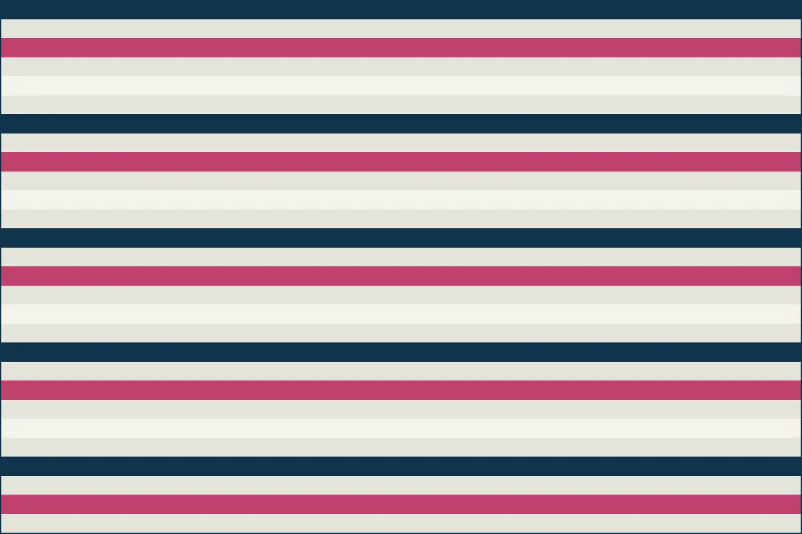
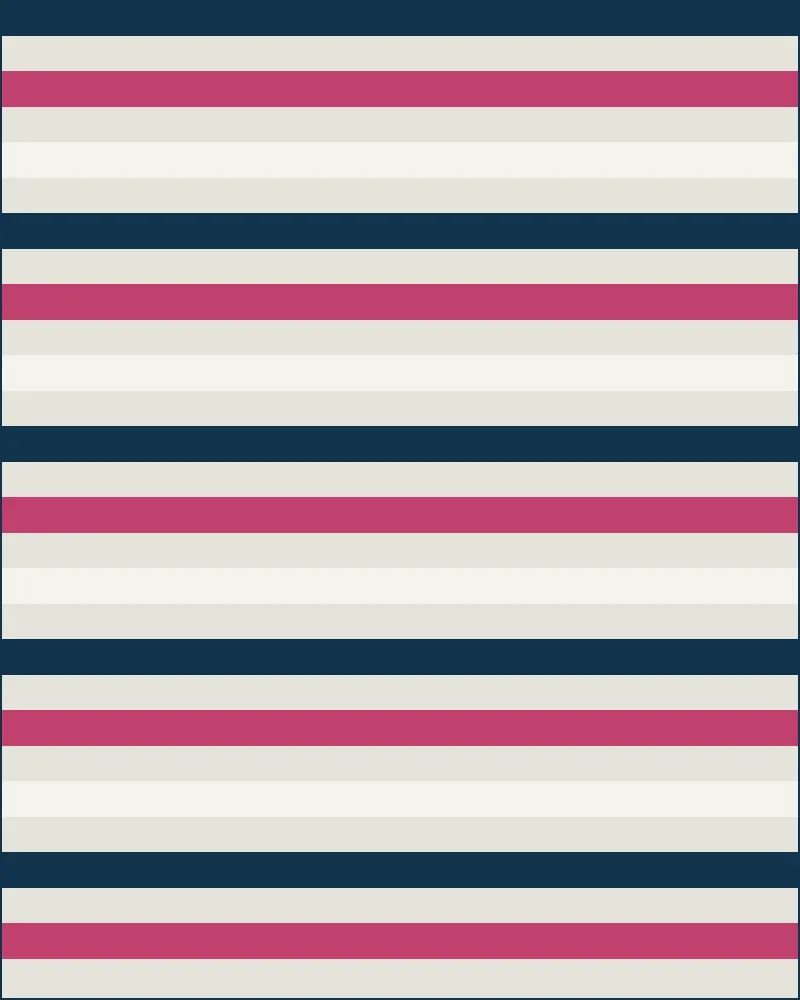
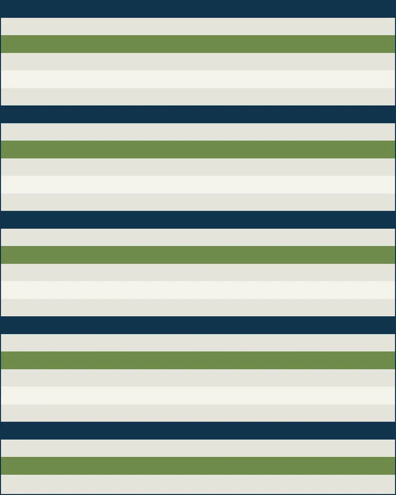
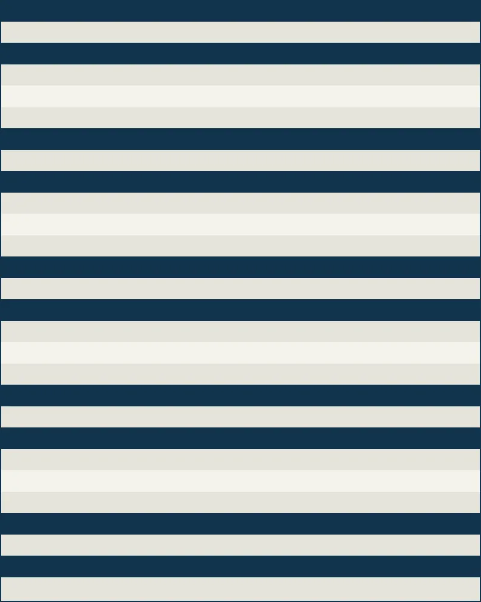

Bollen uit de Bollenstreek, sinds 1958
Wij telen tulpen, narcissen, hyacinten en sierui op veertien hectare in Hillegom. Voor de tuin thuis en voor het plantsoen van de gemeente.
Vraag een offerte aan Bekijk het assortiment
Levering Plantbaar

Wat er op het veld staat
-

Tulpen
Tulipa
Enkelbloemig, dubbelbloemig en botanisch. Ruim veertig cultivars, waarvan we er twaalf zelf hebben geselecteerd.
-

Narcissen
Narcissus
Verwilderingsbollen die jaar op jaar terugkomen. Sterk op zware klei en in de berm.
-

Hyacinten
Hyacinthus
Op geur geselecteerd. Vooral gevraagd voor perken bij entrees en zorgcentra.
-

Sierui
Allium
Late bloei, lange steel. Doet het goed tussen vaste planten.
Zo verloopt een bestelling
-
01
Vertel wat u zoekt
Soort, kleur, aantal en waar ze komen te staan. Twijfelt u? Stuur een foto van de plek mee.
-
02
U krijgt een voorstel
Binnen twee werkdagen een offerte met cultivars, maatsortering en prijs per honderd stuks.
-
03
Levering in het najaar
Wij leveren tussen half september en eind november, op het moment dat plantbaar is.

Vier generaties op hetzelfde perceel
Mijn overgrootvader nam het land aan de Vosselaan over in 1958: veertien hectare zandgrond achter de duinen. Sindsdien is er geen meter bij gekomen en geen meter af gegaan.
Tot in de jaren tachtig trokken we vooral bloemen op de broeierij. Toen die markt smaller werd zijn we teruggegaan naar waar we goed in zijn: bollen telen, rooien, sorteren en zelf leveren.
Wat we nu anders doen is kleinere partijen, meer cultivars en geen vaste catalogus. U vertelt wat er moet komen te staan, wij zoeken erbij wat dit jaar goed is.
Hillegom, Zuid-Holland · 14 ha · sinds 1958
Neem contact op
Vertel kort wat u zoekt, dan sturen we binnen twee werkdagen een voorstel. Langskomen op het erf kan ook, graag even bellen.
- Adres
- Vosselaan 12
2181 KM Hillegom - Telefoon
- 0252 – 12 34 56
- info@grondwerkbloembollen.nl
- KvK
- 28104477
- Erf geopend
- ma–vr 08:00–17:00
za 09:00–12:30
Bedankt, uw bericht is verstuurd
U hoort binnen twee werkdagen van ons, op het e-mailadres dat u heeft opgegeven.